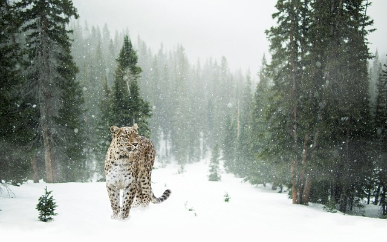

Цікаві Факти про Оленів.
1. Приблизна тривалість життя снігового барса - 20-25 років.
2. Забарвлення хутра сніжного барса робить його маскування в засніжених горах ідеальною.
3. Сніжні барси носять свій хвіст в роті, щоб не намочити і забруднити.
4. Інша назва снігового барса — ірбіс, що в перекладі з тюркської мови означає « сніговий кіт ».
5. Самки снігових барсів приносять потомство двічі на рік.
6. Снігові барси стараються не атакувати людей.
7. Снігові барси занесені в Червону книгу.
8. Снігові барси здатні здійснювати стрибки до шести метрів в довжину і трьох метрів у висоту.
9. Снігові барси володіють короткими м'язистими лапами і надзвичайно довгим хвостом, який під час бігу на високій швидкості і під час стрибків використовується ними в якості керма.
10. На відміну від великих кішок, сніжний барс вміє муркотіти, але не вміє ричати.
Перейти до наступної тварини